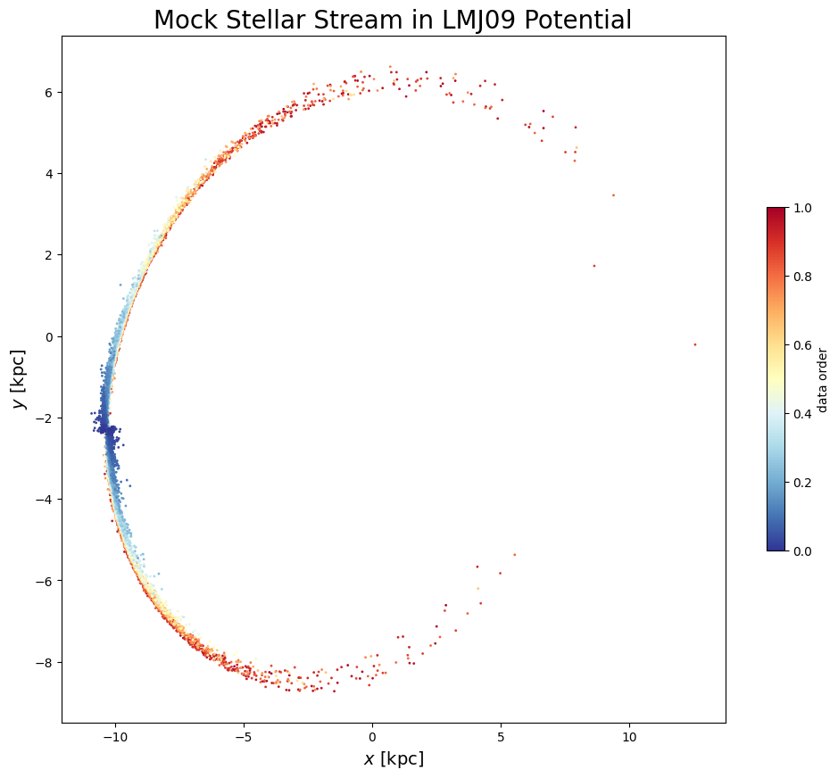
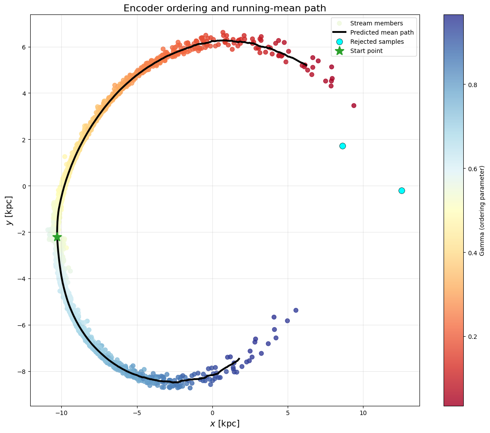

Learning a Stream with a Running Mean#

The stream autoencoder tutorial fits the mean track of a stream with a trained decoder network. Training that decoder is most of the cost. This tutorial fits the same stream with a running mean instead, which has nothing to train: for any ordering coordinate \(\gamma\) it averages the positions of the member stars whose \(\gamma\) falls within a small window around it. Only the encoder is trained, so the fit is much faster (roughly ten times, when we timed it), which matters when the fit sits inside a loop, such as a likelihood evaluated at every step of an MCMC.
The price is accuracy: averaging along a curve pulls the path to the inside of each bend. On a gently curving stream like this one the effect is small; the epitrochoid running-mean tutorial shows a case where it is not, and explains the cause in detail.
# On Colab, clone the repository, install the locked tutorial dependencies, and run
# from docs/tutorials. Elsewhere it does nothing: run from docs/tutorials with the
# `tutorials` extra.
import pathlib
import sys
repo = pathlib.Path("/content/phasecurvefit")
if "google.colab" in sys.modules:
%pip install -q uv
if not repo.exists():
!git clone -q --depth 1 https://github.com/GalacticDynamics/phasecurvefit {repo}
%cd {repo}
!uv export -q --frozen --extra tutorials --no-dev --no-editable --no-hashes -o r.txt
!uv pip install -q --system --python {sys.executable} -r r.txt
%cd docs/tutorials
import pathlib
import equinox as eqx
import galax.coordinates as gc
import galax.dynamics as gd
import galax.potential as gp
import jax.random as jr
import matplotlib.pyplot as plt
import numpy as np
import quaxed.numpy as jnp
import unxt as u
import phasecurvefit as pcf
key = jr.key(201030)
Data: a simulated stream#
The same galax mock stream as the
stream autoencoder tutorial, which describes the
simulation. It loads from the mockstream.npz cache.
usys = u.unitsystems.galactic
# Progenitor Parameters
prog_w0 = gc.PhaseSpaceCoordinate(
q=u.Q([10, 3, 5], "kpc"), p=u.Q([-4, 100, 4], "km/s"), t=u.Q(0.0, "Myr")
)
prog_mass = u.Quantity(2.5e4, "Msun")
# Stream Distribution Function
df = gd.FardalStreamDF()
# Potential
pot = gp.LMJ09LogarithmicPotential(
v_c=u.Q(150, "km/s"),
r_s=u.Q(2, "kpc"),
q1=1.0,
q2=1.3,
q3=0.9,
phi=u.Q(0, "deg"),
units=usys,
)
# Mock stream generator (galax)
mockgen = gd.MockStreamGenerator(df, pot)
mockstream_path = pathlib.Path("mockstream.npz")
comps = ("x", "y", "z")
if not mockstream_path.exists():
print(f"Missing {mockstream_path}; running the simulation.")
stream, prog = mockgen.run(
key,
u.Q(jnp.linspace(0, 4, 4_000), "Gyr"),
prog_w0,
prog_mass,
)
np.savez_compressed(
mockstream_path,
q=np.stack([u.ustrip("kpc", getattr(stream.q, c)) for c in comps], -1),
p=np.stack([u.ustrip("kpc/Myr", getattr(stream.p, c)) for c in comps], -1),
prog_q=np.stack([u.ustrip("kpc", getattr(prog.q, c)) for c in comps]),
)
# Plain arrays, so the cache loads with any package versions. Positions are in
# kpc and velocities in kpc/Myr, one row per star.
with np.load(mockstream_path) as cache:
stream_q, stream_p, prog_q = cache["q"], cache["p"], cache["prog_q"]
fig = plt.figure(figsize=(12, 10))
ax = fig.add_subplot(111)
im = ax.scatter(
stream_q[:, 0],
stream_q[:, 1],
s=1,
c=jnp.linspace(1, 0, len(stream_q)),
cmap="RdYlBu_r",
)
plt.colorbar(im, ax=ax, label="data order", shrink=0.5)
ax.set_xlabel(r"$x$ [kpc]", fontsize=14)
ax.set_ylabel(r"$y$ [kpc]", fontsize=14)
ax.set_title("Mock Stellar Stream in LMJ09 Potential", fontsize=20)
plt.show();

Ordering with the local-flow walk#
We shuffle the stars so their array order carries no information, then run the same walk as the stream autoencoder tutorial, which explains each setting. It orders a sparse but reliable subset of the stars.
# Shuffle the data
key, subkey = jr.split(key)
order = jr.permutation(subkey, jnp.arange(len(stream_q)))
qs = {c: u.Q(stream_q[order, i], "kpc") for i, c in enumerate(comps)}
ps = {c: u.Q(stream_p[order, i], "kpc/Myr") for i, c in enumerate(comps)}
Refining the ordering with a Self-Organizing Map#
The walk orders the tracers, but its path is the greedy route through the
observations themselves, so it carries their scatter. Chaining a SOMOrderer
fits a lattice of prototypes — each an average over many tracers — and re-orders
by arc length along a smooth backbone through them. That backbone, not a
polyline through noisy points, is what the fit below consumes.
The SOM picks up the walk’s velocity-awareness automatically: LocalFlowOrderer
steps along the flow, so its result is marked velocity-aware and the SOM uses a
phase-space metric rather than position alone. A stellar stream is an open curve with no fine
structure to preserve, so the default n_prototypes is enough.
# Determine the starting index as the point closest to the progenitor
# (a plain Python int: the walk is compiled around it).
start_idx = int(np.argmin(np.linalg.norm(stream_q[order] - prog_q, axis=1)))
# Walk configuration
config = pcf.WalkConfig(
strategy=pcf.strats.KDTree(k=50),
metric=pcf.metrics.AlignedMomentumDistanceMetric(),
)
metric_scale = u.Q(100, "kpc")
max_dist = u.Q(3, "kpc")
# Perform walk
walkresult = pcf.order(
qs,
ps,
pcf.orderers.LocalFlowOrderer(
start_idx=start_idx,
metric_scale=metric_scale,
max_dist=max_dist,
config=config,
direction="both",
)
| pcf.orderers.SOMOrderer(),
metadata=pcf.StateMetadata(usys=usys),
)
print(
f"stars ordered by the walk: {int((walkresult.indices >= 0).sum())} of {len(order)}"
)
stars ordered by the walk: 248 of 8000
fig, ax = plt.subplots(figsize=(10, 8))
ax.scatter(qs["x"], qs["y"], s=1, c="0.6", label="all stars")
ordering = walkresult.ordering
walk_qs = {k: v[ordering] for k, v in walkresult.positions.items()}
walk_gamma = np.linspace(*walkresult.gamma_range, len(ordering))
im = ax.scatter(walk_qs["x"], walk_qs["y"], s=50, c=walk_gamma, cmap="RdYlBu", zorder=3)
ax.plot(walk_qs["x"], walk_qs["y"], c="k", lw=1.5, ls="--", zorder=2)
ax.scatter(
[qs["x"][start_idx]],
[qs["y"][start_idx]],
s=200,
c="tab:green",
marker="*",
label="start (nearest the progenitor)",
zorder=4,
)
fig.colorbar(im, ax=ax, label=r"walk $\gamma$")
ax.set(xlabel=r"$x$ [kpc]", ylabel=r"$y$ [kpc]", title="Local-flow walk ordering")
ax.legend()
plt.show()

Training the encoder; building the running mean#
EncoderExternalDecoder pairs a trainable encoder with a decoder that is not a
network:
The encoder (
OrderingNet) maps a star’s 6 phase-space coordinates (in_size=6) to an ordering coordinate \(\gamma\) and a membership probability \(p\). It is trained on the walk’s ordering, as in phase 1 of the full autoencoder.The decoder (
RunningMeanDecoder) is filled in after training. It stores every star’s encoder \(\gamma\) and position, and answers a query \(\gamma\) with the mean position of the member stars (\(p > 0.5\)) withinwindow_size / 2of it.
key, model_key, train_key = jr.split(key, 3)
normalizer = pcf.nn.StandardScalerNormalizer(qs, ps)
model = pcf.nn.EncoderExternalDecoder(
encoder=pcf.nn.OrderingNet(in_size=6, key=model_key),
decoder=pcf.nn.RunningMeanDecoder(window_size=0.05),
normalizer=normalizer,
)
result, opt_state, losses = pcf.nn.train_autoencoder(model, walkresult, key=train_key)
Result#
Within half a window of either tip there are stars on one side only, so the average there is pulled back towards the stream’s interior. We evaluate the path only where the window is full.
def running_mean_path(result, window_size, n=2_000):
"""Evaluate the running-mean path with a given window, away from the tips."""
result_w = eqx.tree_at(lambda r: r.model.decoder.window_size, result, window_size)
g_train = result_w.model.decoder.gamma_train
lo = float(g_train.min()) + window_size / 2
hi = float(g_train.max()) - window_size / 2
return result_w(jnp.linspace(lo, hi, n))
fig, ax = plt.subplots(figsize=(12, 10))
all_gamma, all_probs = result.model.encode(walkresult.positions, walkresult.velocities)
rejected_membership = all_probs < 0.5 # the running mean's member threshold
qs_pred = running_mean_path(result, window_size=0.05)
# Plot all points with gradient coloring
im = ax.scatter(
u.ustrip(usys, qs["x"]),
u.ustrip(usys, qs["y"]),
s=50,
c=np.asarray(all_gamma),
cmap="RdYlBu",
alpha=0.8,
label="Stream members",
)
# Plot predicted mean path
ax.plot(
u.ustrip(usys, qs_pred["x"]),
u.ustrip(usys, qs_pred["y"]),
c="k",
lw=3,
label="Predicted mean path",
)
# Mark rejected samples in cyan
ax.scatter(
u.ustrip(usys, qs["x"][rejected_membership]),
u.ustrip(usys, qs["y"][rejected_membership]),
s=100,
c="cyan",
alpha=1.0,
marker="o",
edgecolors="black",
linewidths=0.5,
label="Rejected samples",
)
# Mark start point
ax.scatter(
u.ustrip(usys, qs["x"][start_idx]),
u.ustrip(usys, qs["y"][start_idx]),
s=200,
c="tab:green",
marker="*",
label="Start point",
linewidths=2,
zorder=5,
)
ax.set_xlabel(r"$x$ [kpc]", fontsize=14)
ax.set_ylabel(r"$y$ [kpc]", fontsize=14)
ax.set_title("Encoder ordering and running-mean path", fontsize=16)
fig.colorbar(im, ax=ax, label="Gamma (ordering parameter)")
ax.legend(loc="upper right", fontsize=10)
ax.grid(True, alpha=0.3)
plt.tight_layout()
plt.show();

What to look for: the colour (the encoder’s \(\gamma\)) changes smoothly from tip to tip, and the path runs along the middle of the stream. Unlike on the epitrochoid, there is little visible offset: this stream bends gently compared with the window, so the stars within one window lie on a nearly straight segment, and their average stays on the stream. Where the stream is sparse, near the tips, fewer stars share each window and the path gets noisier.
Takeaways#
The running mean replaces decoder training with a windowed average, and is roughly ten times faster to fit than the full autoencoder here.
Its accuracy depends on the window size relative to the stream’s curvature and density. For gently curving streams the default works well; for tightly curved ones, see the epitrochoid running-mean tutorial.